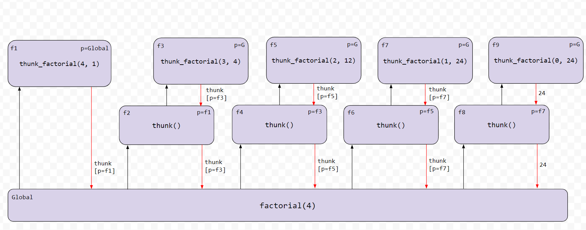
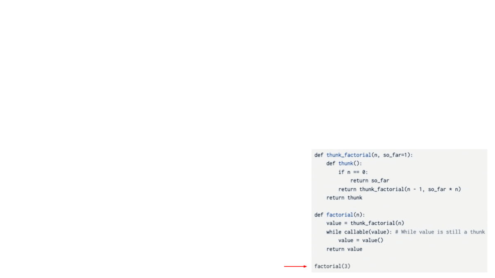

Scheme 解释器
eval 调用 apply，
而 apply 又再次调用 eval！
这一切何时才会结束？

引言
重要提交说明：要获得满分，请在 08/06 星期四之前提交完成第 1 阶段和第 2 阶段的作业（占 1 分）。
请在 08/13 星期四之前提交完成所有阶段的作业。
延期处理：本项目不接受延期（除非是 DSP）。
请尽量按顺序完成各题并运行它们的 ok 测试，因为后面有些题目的实现会依赖前面的题目。
整个项目可以两人合作完成。
在本项目中，你将用 Python 为 Scheme 语言的一个子集实现一个解释器。本项目使用的这个语言子集在《Composing Programs》的 函数式编程 一节以及这个 语言规范 和 内置过程参考 中有描述。
要了解更多关于 Scheme 的内容，你可以免费在线阅读 下载起始文件
你可以把项目代码全部下载为一个 zip 压缩包。 你将编辑的文件： 项目中的其余文件： 你需要提交以下文件： 对于我们要求你完成的函数，我们可能会提供一些初始代码。如果你不想使用这些代码，可以删掉它们，从零开始写。你也可以按自己的需要添加新的函数定义。 但是，请不要修改任何其他函数，也不要编辑上面未列出的文件，否则你的代码可能无法通过自动评分程序的测试。另外，请不要改动任何函数签名（名称、参数顺序或参数个数）。 在整个项目中，你都应该测试代码的正确性。经常测试是个好习惯，这样容易定位问题。但也不要测试得过于频繁，要留出时间把问题想清楚。 我们提供了一个名为 如果你想交互式地测试代码，可以运行
scheme_eval_apply.py：用于 Scheme 表达式的递归求值器scheme_forms.py：用于求值 Scheme 中特殊形式（如 define、lambda、and、cond 等）的 Python 函数scheme_classes.py：描述 Scheme 表达式的 Python 类questions.scm：供你实现的 Scheme 过程
link.py：定义了 Link 类、nil 和 map_linkscheme.py：解释器的读取-求值-打印循环（REPL），即解释器的用户界面scheme_builtins.py：内置的 Scheme 过程scheme_reader.py：Scheme 表达式的读取器（解析器）scheme_tokens.py：Scheme 输入的词法分析器scheme_utils.py：用于检查 Scheme 表达式的函数buffer.py：供 Scheme 读取器使用的工具类ucb.py：供 61A 项目使用的工具函数tests.scm：用 Scheme 编写的一组测试用例ok：自动评分程序tests：ok 所使用的测试目录mytests.rst：一个你可以添加自己测试的文件事务安排
scheme_eval_apply.pyscheme_forms.pyscheme_classes.pyquestions.scmok 的自动评分程序，帮助你测试代码并跟踪进度。第一次运行时，它会要求你通过网页浏览器登录 Ok 账号，请照做。每次运行 ok，它都会把你的工作和进度备份到我们的服务器上。ok 的主要用途是测试你的实现。 python3 ok -q [question number] -i
并填入对应的题目编号（例如 01）。它会运行该题目的测试，直到你第一个失败的测试为止，然后让你有机会交互式地测试自己写的函数。
你也可以使用 OK 的调试打印功能，只要在 print 语句前加上 "DEBUG:"。例如，如果你想查看变量 x 的值，可以这样写：
print(f"DEBUG: x is {x}")
这样终端就会输出内容，而不会因为多出来的输出导致 OK 测试失败。
解释器细节
Scheme 特性
读取-求值-打印。解释器读取 Scheme 表达式，对它们求值，并显示结果。
scm> 2
2
scm> (+ 2 3)
5
scm> ((lambda (x) (* x x)) 5)
25为 Scheme 解释器提供的起始代码足以成功求值上面的第一个表达式——一个数字。不过，更复杂的操作，例如第二个例子（调用一个内置过程）和第三个例子（计算 5 的平方），目前还无法工作。
Load。你可以通过传入表示文件名的符号来加载文件。例如，要加载 tests.scm，请对下面的调用表达式求值。
scm> (load 'tests)符号（Symbols）。在我们 AHUT_1A 使用的 Scheme 方言中，符号（或标识符）是由字母（a-z 和 A-Z）、数字以及 !$%&*/:<=>?@^_~-+. 中的字符组成的序列，且不能构成合法的整数或浮点数。
我们这个版本的 Scheme 不区分大小写：如果两个标识符仅在字母大小写上不同，它们就被视为相同。它们在内部以小写形式表示和打印：
scm> 'Hello
hello运行解释器
要启动一个交互式的 Scheme 解释器会话，请输入：
python3 scheme.py要退出 Scheme 解释器，在 Mac/Linux 上按 Ctrl-d（在 Windows 上按 Ctrl-z Enter），或者调用内置的 exit 过程
（在完成第 3 题、实现了内置 Scheme 过程的调用之后）：
scm> (exit)你可以把文件名作为命令行参数传给 scheme.py，用你的 Scheme 解释器求值输入文件中的表达式：
python3 scheme.py tests.scmtests.scm 文件中包含一长串示例 Scheme 表达式及其期望值。其中许多例子来自 Structure and Interpretation of Computer Programs 的第 1 章和第 2 章，该书正是《Composing Programs》改编所依据的教材。
Schememon
解释器的一个实际应用，就是让用某种编程语言编写的程序能够包含用另一种语言编写的代码。例如，用 Python 编写的游戏如果内置了一个用 Python 写的 Scheme 解释器（它求值 Scheme 表达式并把它们的值表示为 Python 对象），那么这个游戏也可以包含 Scheme 代码。
本项目就包含这样一个游戏，叫做 Schémémon，由往届学生 Tristan Roath 和 Tyler Roath 制作。在这个卡牌对战游戏中，当玩家正确填写出一个 Scheme 过程定义时，伤害会翻倍。你在这个项目中构建的 Scheme 解释器就用来检查玩家的答案是否正确。
你可以随时在线玩 Schememon。为了给你更多动力，每当你在本 Scheme 项目中完成一道题，就可以在 candies 菜单中领取一些 gummy bears 来解锁新的对战。详情请阅读instructions。
阶段 1：求值器
在你拿到的初始实现中，解释器只能求值自求值表达式：数字、布尔值和 nil。
在阶段 1 中，你将为解释器开发以下功能：
- 符号的定义与查找
- 表达式的求值
- 调用内置过程（例如
+、exit、equal?等；完整列表见 内置过程参考）
下面带你浏览一遍起始代码。
在 scheme_eval_apply.py 中：
scheme_eval在环境env中对 Scheme 表达式expr求值。这个函数几乎已经完成，只是缺少处理调用表达式的逻辑。- 看看
scheme_eval中的这个if语句块：
if scheme_symbolp(first) and first in scheme_forms.SPECIAL_FORMS:
return scheme_forms.SPECIAL_FORMS[first](rest, env)注意，在求值特殊形式时，scheme_eval 会把求值重定向到 scheme_forms.py 中相应的 do_?_form 函数。特殊形式的一些例子有 and、or、cond、if（注意它们不是内置过程）。我们将在后面的某一节实现 do_?_form 函数。
scheme_apply把一个过程应用到一些参数上。
在 scheme_classes.py 中：
Frame类表示帧，每个帧同时也表示一个以该帧为起点的环境。LambdaProcedure类表示用户定义的过程。
重要提示：由于所有非原子的 Scheme 表达式（即调用表达式、特殊形式、定义）都是 Scheme 列表（因而是链表），我们用
Link类来表示它们。例如，表达式(+ 1 2)在我们的解释器中会表示为Link('+', Link(1, Link(2, nil)))。更复杂的表达式可以用嵌套的Link表示。例如，表达式(+ 1 (* 2 3))会表示为Link('+', Link(1, Link(Link('*', Link(2, Link(3, nil))), nil)))。
用 ok 检验你的理解：
python3 ok -q eval_apply -u题目 1
在 scheme_classes.py 中实现 Frame 类的 define 和 lookup 方法。
每个 Frame 对象都有以下实例属性：
bindings是一个字典，表示该帧实例中的绑定。每一项把一个 Scheme 符号（用 Python 字符串表示）关联到一个 Scheme 值。parent是父Frame实例（父环境帧）。Global Frame 的 parent 为None。
要完成这些方法：
define接收一个符号（用 Python 字符串表示）和一个值，它使用bindings把该符号绑定到这个值上。lookup接收一个符号，并返回环境中第一个找到该符号的帧里所绑定的值。一个Frame实例的环境由该帧、它的父帧以及它的所有祖先帧（包括 Global Frame）组成。查找符号时：- 如果该符号绑定在当前帧中，就返回它的值。
- 如果该符号没有绑定在当前帧中，而该帧有父帧，就继续在父帧中查找该符号。
- 持续检查所有父帧，直到找到该符号，或者没有更多父帧为止。
- 如果在任何帧中都找不到该符号，就抛出 SchemeError。
写代码之前，先解锁测试，检验你对题目的理解：
python3 ok -q 01 -u解锁完成后，开始实现你的解法。你可以用下面的命令检查正确性：
python3 ok -q 01完成这道题之后，启动你的 Scheme 解释器（用 python3 scheme.py），现在你应该能够查找内置过程的名字了：
scm> +
#[+]
scm> odd?
#[odd?]不过，在完成下一题之前，你的 Scheme 解释器仍然无法调用这些过程。
记住，此时你只能通过在 Max/Linux 上按 Ctrl-d（在 Windows 上按 Ctrl-z Enter）来退出解释器。
题目 2
要能够调用内置过程（例如 +），你需要完成 scheme_eval_apply.py 中 scheme_apply 函数里的 BuiltinProcedure 分支。内置过程是通过调用实现该过程的相应 Python 函数来应用的。
要查看项目中用到的所有 Scheme 内置过程列表，请看
scheme_builtins.py文件。任何用@builtin装饰的函数都会被加入全局定义的BUILTINS列表。
BuiltinProcedure 有两个实例属性：
py_func：实现该内置 Scheme 过程的 Python 函数。need_env：一个布尔值，表示这个内置过程是否需要把当前环境作为最后一个参数传入。例如，要实现内置的eval过程就需要环境。
scheme_apply 接收过程对象、由参数值组成的链表 args 以及当前环境 env。args 参数是一个 Scheme 列表，用 Link 对象或 nil 表示，其中包含传给该过程的值。例如，如果我们要用的 Scheme 内置过程是 +，并且传给 scheme_apply 的 args 是 Link(1, Link(2, nil))，那么我们就相当于在进行调用 (+ 1 2)。
你的实现应该完成以下步骤：
- 把 Scheme 列表转换成 Python 参数列表。提示：
args是一个Link，它有.first和.rest属性。- 如果
procedure.need_env为True，就把当前环境env添加到这个列表的末尾。- 返回用所有这些参数调用
procedure.py_func的结果。由于你不知道参数的确切个数，请使用*args记法：f(1, 2, 3)等价于f(*[1, 2, 3])。请在提供的try语句中、也就是写着try:的那一行之后完成这部分。
我们已经为你实现了以下行为：
- 如果调用该函数引发了
TypeError异常，说明传入的参数个数不对。try语句会处理这个异常，并抛出带有消息'incorrect number of arguments'的SchemeError。
写代码之前，先解锁测试，检验你对题目的理解：
python3 ok -q 02 -u解锁完成后，开始实现你的解法。你可以用下面的命令检查正确性：
python3 ok -q 02👩🏽💻👨🏿💻 结对编程？ 记得在 driver 和 navigator 两个角色之间轮换。 driver 负责操作键盘； navigator 负责观察、提问并提出想法。
题目 3
scheme_eval 函数（在 scheme_eval_apply.py 中）在环境中对 Scheme 表达式求值。提供的代码已经能够在当前环境中查找符号、返回自求值表达式（例如数字）并求值特殊形式。
实现 scheme_eval 中缺失的那部分，也就是对调用表达式的求值。要对调用表达式求值：
- 求值运算符（它应该求值为一个
Procedure实例 —— 关于Procedure的定义见scheme_classes.py）。 - 求值所有操作数，并把结果（参数值）收集到一个 Scheme 列表中。
- 返回对这个
Procedure、这些参数值以及当前环境调用scheme_apply的结果。
你需要在前两步中递归地调用 scheme_eval。以下是其他一些你应该使用的函数/方法：
map_link函数返回一个新的 Scheme 列表，它是把某个单参数 Python 函数应用到 Scheme 列表中每一项后构造出来的。scheme_apply函数把 Scheme 过程应用到以 Scheme 列表（Link实例或nil）表示的参数上。
重要：不要修改传入的
expr。那样会在程序求值的过程中改变它，产生奇怪且错误的效果。
写代码之前，先解锁测试，检验你对题目的理解：
python3 ok -q 03 -u解锁完成后，开始实现你的解法。你可以用下面的命令检查正确性：
python3 ok -q 03有些解锁测试会调用一个叫
print-then-return的原生（内置）过程。这个过程在 Scheme 中并不存在，是为了测试这道题才加入本项目的。print-then-return接收两个参数：它打印出第一个参数并返回第二个参数。如果你感兴趣，可以在scheme_builtins.py的底部找到这个函数。
你的解释器现在应该能够求值内置过程调用了，这让你拥有了 Calculator 语言的功能甚至更多。运行 python3 scheme.py，现在你就可以做加法和乘法了！
scm> (+ 1 2)
3
scm> (* 3 4 (- 5 2) 1)
36
scm> (odd? 31)
#t题目 4
Scheme 中的 define 特殊形式（spec）既可以用来把给定表达式的值赋给一个符号，也可以用来创建一个过程并将其绑定到一个符号：
scm> (define a (+ 2 3)) ; Binds the symbol a to the value of expression (+ 2 3)
a
scm> (define (foo x) x) ; Creates a procedure and binds it to the symbol foo
foo注意，第一个操作数的类型能告诉我们正在定义的是什么：
- 如果它是一个符号，例如
a，那么这个表达式定义的是一个符号。 - 如果它是一个 Scheme 列表，例如
(foo x)，那么这个表达式创建的是一个过程。
scheme_forms.py 中的 do_define_form 函数负责求值 (define ...) 表达式。这个函数有两处缺失：一处在第一个操作数是符号时，另一处在第一个操作数是 Scheme 列表（即 Link）时。本题只需实现第一部分，即求值第二个操作数得到一个值，并把第一个操作数（一个符号）绑定到该值。然后，do_define_form 返回被绑定的那个符号。
提示：
Frame实例的define方法会在该环境帧中创建一个绑定。
写代码之前，先解锁测试，检验你对题目的理解：
python3 ok -q 04 -u解锁完成后，开始实现你的解法。你可以用下面的命令检查正确性：
python3 ok -q 04现在你应该能够给符号赋值并求值这些符号了。
scm> (define x 15)
x
scm> (define y (* 2 x))
y
scm> y
30下面这个 ok 测试用来判断调用表达式的运算符是否被求值了多次。在抛出错误之前，运算符应该只被求值一次（因为 x 并没有绑定到一个过程）。
(define x 0)
; expect x
((define x (+ x 1)) 2)
; expect SchemeError
x
; expect 1如果运算符被求值了两次，那么最后 x 会绑定到 2 而不是 1，导致测试失败。因此，如果你的代码没通过这个测试，就要确保在 scheme_eval 中只对调用表达式的运算符求值一次。
题目 5
在 Scheme 中，你可以用两种方式引用表达式：使用 quote 特殊形式（spec），或者使用符号 '（撇号）。读取器会把 '... 转换成 (quote ...)，因此你的解释器只需要求值 (quote ...) 这种语法。quote 特殊形式不求值就返回它的操作数表达式：
scm> (quote hello)
hello
scm> '(cons 1 2) ; Equivalent to (quote (cons 1 2))
(cons 1 2)实现 scheme_forms.py 中的 do_quote_form 函数，让它直接返回 (quote ...) 表达式中未被求值的操作数。
写代码之前，先解锁测试，检验你对题目的理解：
python3 ok -q 05 -u解锁完成后，开始实现你的解法。你可以用下面的命令检查正确性：
python3 ok -q 05完成这个函数之后，你应该能够求值被引用的表达式了。在你的解释器里试试下面这些例子吧！
scm> (quote a)
a
scm> (quote (1 2))
(1 2)
scm> (quote (1 (2 three (4 5))))
(1 (2 three (4 5)))
scm> (car (quote (a b)))
a
scm> 'hello
hello
scm> '(1 2)
(1 2)
scm> '(1 (2 three (4 5)))
(1 (2 three (4 5)))
scm> (car '(a b))
a
scm> (eval (cons 'car '('(1 2))))
1
scm> (eval (define tau 6.28))
6.28
scm> (eval 'tau)
6.28
scm> tau
6.28检查阶段 1 的题目
检查确认你完成了阶段 1 中的所有题目：
python3 ok --score运行 ok 命令时，你仍然会看到一些测试被锁定，因为你还没有完成整个项目。
阶段 2：过程
在阶段 2 中，你将添加创建和调用用户定义过程的能力。你将为解释器添加以下功能：
- Lambda 过程，使用
(lambda ...)特殊形式 - 具名过程，使用
(define (...) ...)特殊形式 - 动态作用域的 mu 过程，使用
(mu ...)特殊形式。
题目 6
修改 scheme_eval_apply.py 中的 eval_all 函数（它由 scheme_forms.py 中的 do_begin_form 调用），以完成 begin 特殊形式（spec）的实现。
begin 表达式通过按顺序求值所有子表达式来求值。begin 表达式的值是最后一个子表达式的值。
要完成 begin 的实现，eval_all 将接收 expressions（由表达式组成的 Scheme 列表）和 env（表示当前环境的 Frame），求值 expressions 中的所有表达式，并返回 expressions 中最后一个表达式的值。
scm> (begin (+ 2 3) (+ 5 6))
11
scm> (define x (begin (display 3) (newline) (+ 2 3)))
3
x
scm> (+ x 3)
8
scm> (begin (print 3) '(+ 2 3))
3
(+ 2 3)如果传给 eval_all 的是空的表达式列表（nil），它应返回 Python 值 None，它表示 Scheme 值 undefined。
写代码之前，先解锁测试，检验你对题目的理解：
python3 ok -q 06 -u解锁完成后，开始实现你的解法。你可以用下面的命令检查正确性：
python3 ok -q 06👩🏽💻👨🏿💻 结对编程？ 现在是交换角色的好时机。交换角色能确保你们双方都能从各自角色的学习体验中获益。
用户定义过程
用户定义的 lambda 过程表示为 LambdaProcedure 类的实例。一个 LambdaProcedure 实例有三个实例属性：
formals：一个 Scheme 列表，包含该 lambda 过程各参数的形式参数名。body：一个嵌套的 Scheme 表达式列表，表示过程的主体。env：定义该过程时所处的环境。
例如，在 (lambda (x y) (+ x y)) 中，formals 是 Link('x', Link('y', nil))。body 是 Link(Link('+', Link('x', Link('y', nil))), nil)，这是一个嵌套的 Scheme 列表，其中第一个元素（body.first）是表达式 (+ x y)，表示为 Link('+', Link('x', Link('y', nil)))。body 之所以采用嵌套结构，是为了支持复杂表达式和嵌套函数调用。
题目 7
实现 scheme_forms.py 中的 do_lambda_form 函数（spec），它创建并返回一个 LambdaProcedure 实例。
在 Scheme 中，过程的主体可以包含多个表达式，但至少要有一个。LambdaProcedure 实例的 body 属性是由这些表达式组成的嵌套 Scheme 列表，formals 属性则是一个 Link。和 begin 特殊形式一样，求值过程的主体时会按顺序执行所有表达式。过程返回其最后一个主体表达式的值。
写代码之前，先解锁测试，检验你对题目的理解：
python3 ok -q 07 -u解锁完成后，开始实现你的解法。你可以用下面的命令检查正确性：
python3 ok -q 07虽然你现在还不能调用用户定义的过程，但可以在解释器里求值一个 lambda 表达式，用眼睛确认你正确创建了这个过程。
scm> (lambda (x y) (+ x y))
(lambda (x y) (+ x y))题目 8
实现 Frame 类的 make_child_frame 方法（在 scheme_classes.py 中），它将在调用用户定义过程时用来创建新帧。这个方法接收两个参数：formals，一个由符号组成的 Scheme 列表（例如 Link('x', Link('y', nil))）；以及 vals，一个由值组成的 Scheme 列表（例如 Link(3, Link(5, nil))）。它应返回一个新的子帧，其中形式参数已绑定到对应的值。
具体做法：
- 如果参数值的个数与形式参数的个数不匹配，抛出
SchemeError。 - 创建一个新的
Frame实例，作为该帧（即self）的子帧。 - 在新创建的帧中，把每个形式参数绑定到对应的值。
formals中的第一个符号应绑定到vals中的第一个值，依此类推。记住formals和vals都是Link。 - 返回这个新帧。
提示：
Frame实例的define方法会在该环境帧中创建一个绑定。
写代码之前，先解锁测试，检验你对题目的理解：
python3 ok -q 08 -u解锁完成后，开始实现你的解法。你可以用下面的命令检查正确性：
python3 ok -q 08题目 9
实现 scheme_eval_apply.py 中 scheme_apply 函数里的 LambdaProcedure 分支。当被应用的过程是 LambdaProcedure 实例时，就会执行这个 elif 块。
首先创建一个新的 Frame 实例，并通过对适当的父帧调用 make_child_frame 方法，把该过程的形式参数绑定到参数值上。
然后，在这个新帧中，用 eval_all 依次求值该过程主体的每一个表达式。
提示：你的新帧应该是定义该 lambda 的那个帧的子帧。而作为参数传给
scheme_apply的env则是调用该过程时所处的帧。参见 用户定义过程，回忆一下
LambdaProcedure的各个属性。
写代码之前，先解锁测试，检验你对题目的理解：
python3 ok -q 09 -u解锁完成后，开始实现你的解法。你可以用下面的命令检查正确性：
python3 ok -q 09题目 10
目前，你的 Scheme 解释器已经能够按以下方式把符号绑定到用户定义的过程：
scm> (define f (lambda (x) (* x 2)))
f不过，我们还希望能使用定义具名过程的简写形式，也就是我们在作业和实验里一直用的那种写法：
scm> (define (f x) (* x 2))
f修改 scheme_forms.py 中的 do_define_form 函数，使它能够正确处理 define (...) ...) 表达式（spec）。
确保它能处理包含多个表达式的主体。例如，
scm> (define (g y) (print y) (+ y 1))
g
scm> (g 3)
3
4这道题（至少）有两种解法。一种是构造一个 (define _ (lambda ...)) 表达式并对其调用 do_define_form（省略 define）。第二种是直接实现：
- 使用给定的变量
signature和expressions，找出所定义函数的名字（符号）、formals 和 body。 - 用 formals 和 body 创建一个
LambdaProcedure实例。（你可以调用do_lambda_form来完成。） - 把该符号绑定到这个新的
LambdaProcedure实例上。 - 返回被绑定的那个符号。
Doctest 演示： 考虑这个 doctest：
do_define_form(read_line("((f x) (+ x 2))"), env)。这个 Python 调用会在 Scheme 中求值(define (f x) (+ x 2))。read_line是一个工具函数，它接收"((f x) (+ x 2))"并返回其Link表示。 因此，那个Link表示会作为expressions参数传入do_define_form。解法 2 的提示：我们如何利用
((f x) (+ x 2))（即(define (f x) (* x 2))的结构）的 Scheme 列表表示， 来实现与(define f (lambda (x) (+ x 2)))相同的功能？后者我们知道我们的 Scheme 解释器（因而我们的 Python 代码）已经能处理了。 请试着自己把它的 Scheme 列表表示写出来，并考虑需要从中提取哪些组成部分，才能在do_define_form中用 Python 复现(define f (lambda (x) (+ x 2)))的功能。
写代码之前，先解锁测试，检验你对题目的理解：
python3 ok -q 10 -u解锁完成后，开始实现你的解法。你可以用下面的命令检查正确性：
python3 ok -q 10在项目的这个阶段，你的 Scheme 解释器应该支持以下功能：
- 用
lambda表达式创建过程， - 用
define表达式定义具名过程，以及 - 调用用户定义的过程。
检查点自测
检查一下你是否完成了阶段 1 和阶段 2 中的所有题目：
python3 ok --score运行 ok 命令时，你仍然会看到一些测试处于锁定状态，因为你还没有完成整个项目。只要你完成到当前为止的所有题目，就能拿到 checkpoint 的满分。
阶段 3：Mu 与逻辑形式
题目 11
到目前为止我们看到的所有 Scheme 过程都采用词法作用域：新调用帧的父帧就是定义该过程时所处的环境。另一种作用域在 Scheme 中并不标准，但出现在 Lisp 的其他变体中，叫做动态作用域：新调用帧的父帧是求值该调用表达式时所处的环境。在动态作用域下，从代码的不同位置用相同的参数调用同一个过程可能产生不同的行为（因为父帧不同）。
mu 特殊形式（spec；为本项目而发明）求值为一个动态作用域的过程。
scm> (define f (mu () (* a b)))
f
scm> (define g (lambda () (define a 4) (define b 5) (f)))
g
scm> (g)
20在上面的例子中，过程 f 并没有参数 a 或 b；但是，由于 f 是在过程 g 内部被调用的，它能够访问 g 的帧中定义的 a 和 b。
你的任务：
- 实现
scheme_forms.py中的do_mu_form，以对mu特殊形式求值。一个mu表达式求值为一个MuProcedure。MuProcedure类（定义在scheme_classes.py中）已经为你提供好了。 - 除了实现
do_mu_form之外，还要完成scheme_apply函数（在scheme_eval_apply.py中）里的MuProcedure分支，使得调用 mu 过程时，其主体在正确的环境中求值。调用MuProcedure时，新调用帧的父帧是求值该调用表达式时所处的环境。因此，MuProcedure不需要把环境保存为实例属性。你这里的代码应该和第 9 题非常相似。
写代码之前，先解锁测试，检验你对题目的理解：
python3 ok -q 11 -u解锁完成后，开始实现你的解法。你可以用下面的命令检查正确性：
python3 ok -q 11本节剩下的内容将在 scheme_forms.py 中完成。
逻辑特殊形式包括 if、and、or 和 cond。这些表达式之所以特殊，是因为它们的子表达式不一定全都会被求值。
在 Scheme 中，只有 #f 是假值。其他所有值（包括 0 和 nil）都是真值。你可以用 scheme_utils.py 中提供的 Python 函数 is_scheme_true 和 is_scheme_false 来判断一个值是真值还是假值。
Scheme 传统上用
#f表示布尔假值。在我们的解释器中，它等价于false或False。同样，true、True和#t也都等价。不过，在做解锁测试时，请使用#t和#f。
为了帮你上手，我们在 do_if_form 函数中提供了 if 特殊形式的实现。
问题 12
实现 do_and_form 和 do_or_form，使 and 和 or 表达式（spec）能够被正确求值。
逻辑形式 and 和 or 都是短路的。对于 and，你的解释器应从左到右依次求值每个子表达式，如果其中任何一个为假值，就返回该值。否则，返回最后一个子表达式的值。如果 and 表达式中没有子表达式，它的求值结果为 #t。
scm> (and)
#t
scm> (and 4 5 6) ; all operands are true values
6
scm> (and 4 5 (+ 3 3))
6
scm> (and #t #f 42 (/ 1 0)) ; short-circuiting behavior of and
#f在这里的代码中，你应该把 Scheme 的
#t表示为 Python 的True，把 Scheme 的#f表示为 Python 的False。
对于 or，从左到右依次求值每个子表达式。如果任何子表达式求值为真值，就返回该值。否则，返回最后一个子表达式的值。如果 or 表达式中没有子表达式，它的求值结果为 #f。
scm> (or)
#f
scm> (or 5 2 1) ; 5 is a true value
5
scm> (or #f (- 1 1) 1) ; 0 is a true value in Scheme
0
scm> (or 4 #t (/ 1 0)) ; short-circuiting behavior of or
4重要：使用 scheme_utils.py 中提供的 Python 函数 is_scheme_true 和 is_scheme_false 来判断布尔值。
写代码之前，先解锁测试，检验你对题目的理解：
python3 ok -q 12 -u解锁完成后，开始实现你的解法。你可以用下面的命令检查正确性：
python3 ok -q 12第 13 题
填写 do_cond_form 中缺失的部分，使其正确实现 cond（spec）：返回第一个谓词为真的结果子表达式的值，或者返回与 else 对应的结果子表达式的值。
一些特殊情况：
- 当为真的谓词没有对应的结果子表达式时，返回该谓词的值。
- 当
cond分支的结果子表达式包含多个表达式时，把它们全部求值并返回最后一个表达式的值。（提示：使用eval_all。）
你的实现应该与下面的示例以及 tests.scm 中的其他测试相符。
scm> (cond ((= 4 3) 'nope)
((= 4 4) 'hi)
(else 'wait))
hi
scm> (cond ((= 4 3) 'wat)
((= 4 4))
(else 'hm))
#t
scm> (cond ((= 4 4) 'here (+ 40 2))
(else 'wat 0))
42如果没有为真的谓词也没有 else，则 cond 的值是未定义的。在这种情况下，do_cond_form 应返回 None。如果只有 else，就返回其结果子表达式的值。如果它没有结果子表达式，则返回 #t。
scm> (cond (False 1) (False 2))
scm> (cond (else))
#t用 ok 解锁并测试你的代码：
python3 ok -q 13 -u
python3 ok -q 13额外的 Scheme 测试
本项目第三部分的最后一项任务，是确保你的 scheme 解释器通过我们提供的额外测试套件。
要运行这些测试（值 1 分），请运行命令：
python3 ok -q tests.scm如果你通过了所有必需的情况，运行 python3 ok --score 时应该会看到 tests.scm 得到 1/1 分。
如果你因为代码中为调试而添加的 print 语句的输出而导致测试失败，也请务必删除这些语句，测试才能通过。
恭喜！你的 Scheme 解释器实现现在完成了！
阶段 4：写一些 Scheme
你的 Scheme 解释器本身不仅是一个树递归程序，而且足够灵活，能够求值其他递归程序。请在 questions.scm 文件中实现以下过程，这将完成 Schémémon 这个游戏的实现。
有关所有内置 Scheme 过程的行为说明，请参阅内置过程参考。
为了帮助你编写 Scheme 代码，你可以使用在线 Scheme 解释器，或者运行 python3 editor 在你的浏览器中打开一个窗口，使用由往届学生 Rahul Arya 创建的基于网页的 Scheme 编辑器。如果浏览器窗口没有自动打开，请访问localhost:31415。
请务必在单独的标签页或窗口中运行 python3 ok，这样编辑器才能持续运行。
👩🏽💻👨🏿💻 结对编程？ 记得在 driver 和 navigator 两个角色之间轮换。 driver 负责操作键盘； navigator 负责观察、提问并提出想法。
如果你想在第 13、14 或 15 题中使用
cond，就必须先实现 Problem EC1，你的测试才能运行。
问题 14
实现 (enumerate s) 过程，它接收一个值列表 s，并返回一个由二元列表组成的列表，其中第一个元素是该值的索引，第二个元素是该值本身。将第一个索引设为 0。
scm> (enumerate '(3 4 5 6))
((0 3) (1 4) (2 5) (3 6))
scm> (enumerate '(c s 6 1 a))
((0 c) (1 s) (2 6) (3 1) (4 a))
scm> (enumerate '())
()用 ok 测试你的代码：
python3 ok -q 14问题 15
字典列表（dictionary list）是一种 Scheme 列表，由若干对 ((key value) (key value) ... (key value)) 组成，其中每个 key 都是唯一的符号。
实现 (get dict key)，这是一个 scheme 过程，接收一个字典列表 dict 和一个值 key，该 key 出现在 dict 中某个 pair 的第一个元素位置。get 过程返回与 key 配对的值。如果 key 不是 dict 中某个 pair 的第一个值，则返回 #f。
然后实现 (set dict key value)，这是一个 scheme 过程，接收一个字典列表 dict 以及 key 和 value 两个值。如果 key 是 dict 中的一个键，则返回一个新的字典列表，其长度与 dict 相同，但与 key 配对的值变为 value。如果 key 不是 dict 中的键，则返回一个字典列表，其中包含 dict 中所有的键值对，并在末尾新增一个包含 (key value) 的 pair。假设 dict 中没有任何 key 出现多次。
scm> (define dict-list '((a 1) (b 2) (c 3)))
dict-list
scm> (get dict-list 'b)
2
scm> (get dict-list 'e)
#f
scm> (set dict-list 'b 4)
((a 1) (b 4) (c 3))
scm> (set dict-list 'x 0)
((a 1) (b 2) (c 3) (x 0))用 ok 测试你的代码：
python3 ok -q 15问题 16
在 Schémémon 中，采取行动之前，你可以选择解决一道 Scheme 编程题。正确解答该题会使你本回合造成的伤害翻倍，并且让你不会失手！这些编程题都由一段描述和一个带空白的 define 形式组成。例如，
Implement factorial(), which takes an integer "n" and outputs the value of "n"!.
(define (factorial n)
(if (= n 0)
1
(* n _____)
)
)实现 solution-code，这是一个 scheme 过程，接收一个 Scheme 列表 problem（其中包含一个带空白的 Scheme 表达式）以及一个 Scheme 表达式 solution。它返回将五条下划线的空白 _____ 替换为 solution 后的结果。如果有多个空白，它们都应被替换为同一个 solution 表达式。
scm> (define add-problem '(define (add x y) _____))
add-problem
scm> (define add-sol '(+ x y))
add-sol
scm> (solution-code add-problem add-sol)
(define (add x y) (+ x y))用 ok 测试你的代码：
python3 ok -q 16开始玩 Schémémon
当你完成 Scheme 解释器并实现 solution-code 之后，就可以用 python3 schememon.py 在自己的电脑上运行 Schémémon。它会使用你的解释器来检查双倍伤害的 Scheme 题是否被正确解答。
总结
恭喜你，你已经完成了最后一个 AHUT_1A 项目！ 你刚刚实现了一门完整语言的解释器！ 如果你喜欢这个项目并想进一步扩展它，你可能会对更高级的特性感兴趣，比如let* 与 letrec、unquote 拼接、错误追踪和continuations。
项目提交
对所有题目运行 ok，确认测试都已解锁并通过：
python3 ok你也可以查看项目每一部分的得分：
python3 ok --score额外挑战
问题 EC 1（0 分）
let 特殊形式（spec）在局部将符号绑定到值，赋予它们初始值。例如：
scm> (define x 5)
x
scm> (define y 'bye)
y
scm> (let ((x 42)
(y (* x 10))) ; this x refers to the global value of x, not 42
(list x y))
(42 50)
scm> (list x y)
(5 bye)在 scheme_forms.py 中实现 make_let_frame，它返回 env 的一个子帧，把 bindings 中每个元素里的符号绑定到其对应表达式的值。bindings 这个 Scheme 列表中包含若干 pair，每个 pair 都包含一个符号和一个对应的表达式。
以下函数和方法可能会对你有帮助：
validate_form：该函数可用于验证每个绑定的结构。它接收一个由表达式组成的 Scheme 列表expr以及最小长度min和最大长度max。如果expr不是长度介于min和max（含端点）之间的列表，它会抛出错误。如果没有传入max，则默认值为无穷大。validate_formals：该函数验证其参数是否为一个由符号组成的 Scheme 列表，且其中每个符号都互不相同。
提示：在迭代地构建新的链表时，从右到左（即从末尾到开头）构建可能会更容易。
如果你对任何测试用例有疑问，记得参考spec！
用 ok 解锁并测试你的代码：
python3 ok -q EC1 -u
python3 ok -q EC1在下一个挑战中，你将实现尾调用优化，这是 Scheme 语言的一个核心特性。观看这个playlist来了解尾调用。
我们将通过一种称为“蹦床”（trampolining）的技术，在 Python 中对 scheme_eval 函数进行尾调用优化，从而在 Scheme 中实现尾调用优化。
首先，让我们从为什么优化 scheme_eval 函数就能优化 Scheme 解释器谈起。
scheme_eval，一个树形递归函数。因此，当我们首次调用 scheme_eval 时，随后会产生大量对 scheme_eval 的递归调用。
例如，考虑下面这个简单过程：
(define (foo n)
(if (= n 0)
0
(foo (- n 1))))在我们的 Scheme 解释器中求值 (foo 4) 会导致 scheme_eval 被调用 52 次。
如果我们把对表达式 (foo 4) 调用 scheme_eval 的过程可视化，会看到一个有趣的模式：

scheme_eval 所产生的递归调用结构，与 foo 所产生的递归调用结构高度一致：
- 计算
(foo 4)的那次scheme_eval调用最终会进行递归调用，去计算(foo 3)。计算(foo 3)的那次scheme_eval调用最终会进行递归调用，去计算(foo 2)，依此类推。 - 在 Scheme 的
foo函数中，(foo 4)这次调用的最后一步动作是对(foo 3)的递归调用。同样地，在 Python 中，为(foo 4)进行的scheme_eval调用的最后一步动作，是对(foo 3)的scheme_eval递归调用。 换句话说，这些scheme_eval调用都是尾调用！
在 Python 中，会打开并保留大量的 scheme_eval 帧。每个 scheme_eval 帧都通过 env 参数持有对上一次调用产生的 foo 帧（用 Frame 类的实例表示）的引用。由于我们当前的解释器实现会保持 scheme_eval 帧处于打开状态，以便在一切求值完成后再返回，因此它也把所有那些不必要的 foo 帧都保持着打开。
然而，由于其中一些 scheme_eval 调用是尾调用，我们实际上并不需要保留在 Python 中创建的所有那些 scheme_eval 帧。通过对 scheme_eval 进行尾调用优化，我们可以消除这些不必要的帧。而由于 Scheme 帧存储于 scheme_eval 调用帧之中，在 Python 中对 scheme_eval 进行尾调用优化，将自动地优化整个 Scheme 解释器（耶！）。
事实证明，对 scheme_eval 进行尾调用优化除了能优化 Scheme 之外，还有其他效果。例如，(or #f (or #f (or #f f ))) 这样的表达式运行起来也会高效得多（我们会在其中一个子部分中探讨这一点）。
foo，它做的事情并不多。
(define (foo n)
(if (= n 0)
0
(foo (- n 1))))在未做尾调用优化的 Scheme 版本中，调用 foo(4) 时会发生以下情况：
为了计算 (foo 4)，我们需要调用 (foo 3)。为了计算 (foo 3)，我们需要调用 (foo 2)。为了计算 (foo 2)，我们需要调用 (foo 1)。为了计算 (foo 1)，我们需要调用 (foo 0)，它返回 0。
在这些递归调用进行期间，每个调用都在等待下一个递归调用的结果，其帧在这段时间内始终保持打开。对于较小的输入这还能应付，但对于 (foo 1000000)，在某个时刻会同时有超过 100 万个帧处于打开状态！这可能会让你的电脑崩溃。
在大多数情况下，在后续的过程调用期间保持这些帧处于活动状态是很重要的。例如，在下面的代码中，过程 f 调用 g。在调用 g 期间，f 的帧需要保持活动状态，这样我们最终才能返回到 f，并用 g 的结果完成它的执行。
(define (f x)
(define y (g x))
(* x y))
(define (g x)
(* 6 x))
(f 7)然而，有些过程（例如 foo）只在最最后一步才进行过程调用。由于 (foo 4) 做的最后一件事就是调用 (foo 3)，所以在 (foo 3) 返回之后，(foo 4) 调用中就没有其他事情要做了。
因此，一旦我们完成了对 (foo 3) 的递归调用，就不需要真的保留 (foo 4) 的帧了。我们的解释器目前会保存这些帧，尽管它们是多余的。如果我们能在用完它们之后将其丢弃，就能解决 foo 在大输入下崩溃的问题，并大幅提升程序的效率。
当某个调用是过程返回之前最后求值的内容时，该调用就处于尾上下文（tail context）中。完整的 Scheme 实现都会实现尾调用优化，即丢弃不必要的帧，使尾调用运行得更高效。
该方法的基本单元是 Thunk，它表示一个尚未求值的操作。创建 Thunk 并模拟未求值操作最简单的方式，是把该操作包装成一个零参数函数保存起来，留待以后求值。
>>> my_thunk1 = lambda: sqrt(16384) + 22
>>> my_thunk2 = lambda: some_costly_operation(1000)在第一个 Thunk 中，我们把操作 sqrt(16384) + 22 包装成一个零参数 lambda 函数，并保存到变量 my_thunk1 中。在第二个 Thunk 中，我们把 some_costly_operation(1000) 包装成一个零参数 lambda 函数，并保存到变量 my_thunk2 中。
之后可以通过调用保存零参数函数的那个变量来“展开”这些 Thunk，调用时就会求值其中的操作。
>>> my_thunk1()
150.0
>>> my_thunk2()
# result of evaluating some_costly_operation(1000)Thunk 也可以嵌套，这时需要多次调用才能展开：
>>> my_nested_thunk = lambda: lambda: lambda: 4 * (2 + 3)
>>> thunk2 = my_nested_thunk()
>>> thunk3 = thunk2()
>>> result = thunk3()
>>> result
20这种对嵌套 thunk 的“展开”可以自动完成：反复调用该 thunk，直到它最终返回一个值。这个过程就是我们所说的蹦床（trampolining）。
def trampoline(value):
while callable(value): # While value is still a thunk
value = value()
return value这有什么用呢？考虑一下我们经过尾调用优化的 Python 阶乘：
def tail_factorial(n, so_far=1):
if n == 0:
return so_far
return tail_factorial(n - 1, so_far * n)虽然 Scheme 版本的 tail_factorial 会进行尾调用优化，但请回想一下，Python 并不会优化尾调用。在这个 Python 版本的 tail_factorial 中，每次递归调用都会打开一个帧，并且只在最后才关闭，这使得它和 Python 中未做尾调用的原始 factorial 实现一样低效！把它可视化为调用栈就是：

可以看到，当我们到达基本情况时，每一个 tail_factorial 帧都还处于打开状态。要解决这个问题，我们可以应用 thunk 化（thunking）！
实现看起来是这样的：
def thunk_factorial(n, so_far=1):
def thunk():
if n == 0:
return so_far
return thunk_factorial(n - 1, so_far * n)
return thunk
def factorial(n):
value = thunk_factorial(n)
while callable(value): # While value is still a thunk
value = value()
return valueThunk 化通过让每次调用只计算阶乘的一步，从而使同时只有一个 thunk_factorial 帧处于打开状态。thunk_factorial 不是进行并返回另一个嵌套调用（像 tail_factorial 中 return tail_factorial(n - 1, so_far * n) 那样），而是返回一个未求值的 thunk。想想 thunk_factorial 中的相互递归是如何做到这一点的！
现在，对于 factorial，我们应用蹦床技术，不断展开 thunk_factorial，直到得到最终答案。
有了这两个函数，我们不再需要在每次递归调用时都让每一个帧保持打开！
为了直观地看出好处，请看下面新的函数调用图，并与原来的尾递归版本作比较：

虽然 thunk 化的版本乍看之下可能更复杂，但请注意，任何时刻最多只有一个 thunk_factorial 和一个 thunk 调用处于活动状态。无论 n 变得多大都是如此！每一步中，调用当前的 thunk 都恰好计算阶乘的一步，然后返回一个新的 thunk 用于下一步，这样过程就能在下一轮循环中继续。
你也可以仔细观察下面这张分步示意图，它演示了 factorial(3) 第一部分的求值过程：

注意，通过从 thunk_factorial 返回一个未求值的 thunk 而不是进行递归调用，已完成的帧就可以关闭，而不必保持打开以等待它们所发出的递归调用返回。这样一来，任何时刻都只有必要的帧保持打开。
对于我们的 Scheme 解释器，一个 Unevaluated 实例就是 scheme_eval（我们想要优化的那个函数）的 thunk。我们通过对所存储的参数反复调用 scheme_eval 来反复求值这个 thunk，直到得到一个值（然后我们返回该值）。
问题 EC 2（0 分）
前言：本题具有挑战性，需要你在不指明具体位置的情况下修改解释器中的多个部分。我们建议你先花时间彻底理解所有概念，并制定清晰的策略，然后再开始写代码。
重要：在做题过程中，请持续确认你为本题编写的代码不会导致项目其他部分失败。如果你发现自己理不清改过哪些地方，保存一份原始代码的副本以供参考可能是个好主意。
完成 scheme_eval_apply.py 中的函数 optimize_tail_calls。它返回一个 scheme_eval 的替代版本，该版本在 Python 中经过尾调用优化。也就是说，它允许在常数空间中存在数量不限的、处于活动状态的 scheme_eval 尾调用。它还有第三个参数 tail，用于指示对 scheme_eval 的这次调用是否是尾调用。
Unevaluated 类表示一个需要在特定环境中求值的表达式。当 optimized_eval 在尾上下文中接收到一个非原子表达式时，它会返回一个 Unevaluated 实例。否则，optimized_eval 应当持续对当前的 expr 和 env 调用 unoptimized_scheme_eval，直到结果是一个最终值，而不是一个 Unevaluated 实例。
在你实现完 optimize_tail_calls 之后，取消注释 scheme_eval_apply.py 中的下面这一行，把原来的 scheme_eval 重新赋值为优化后的实现：
scheme_eval = optimize_tail_calls(scheme_eval)最后，找出你的解释器中哪些对 scheme_eval 的调用是尾调用。在适用的情况下，把这些 scheme_eval 尾调用改为传入 True 作为第三个参数（即 tail 参数）。
注意：一份成功的实现需要修改其他若干函数，其中包括一些我们已为你提供的函数。
提示：
如果一次对
scheme_eval的调用是函数返回之前最后要做的事情，那么它就是尾调用。即使是在同一个函数内部，也并非每一次对
scheme_eval的调用都能从尾调用优化中获益。想想具体哪些调用会获益，并相应地为其tail参数传入 True。
用 ok 测试你的代码：
python3 ok -q EC2